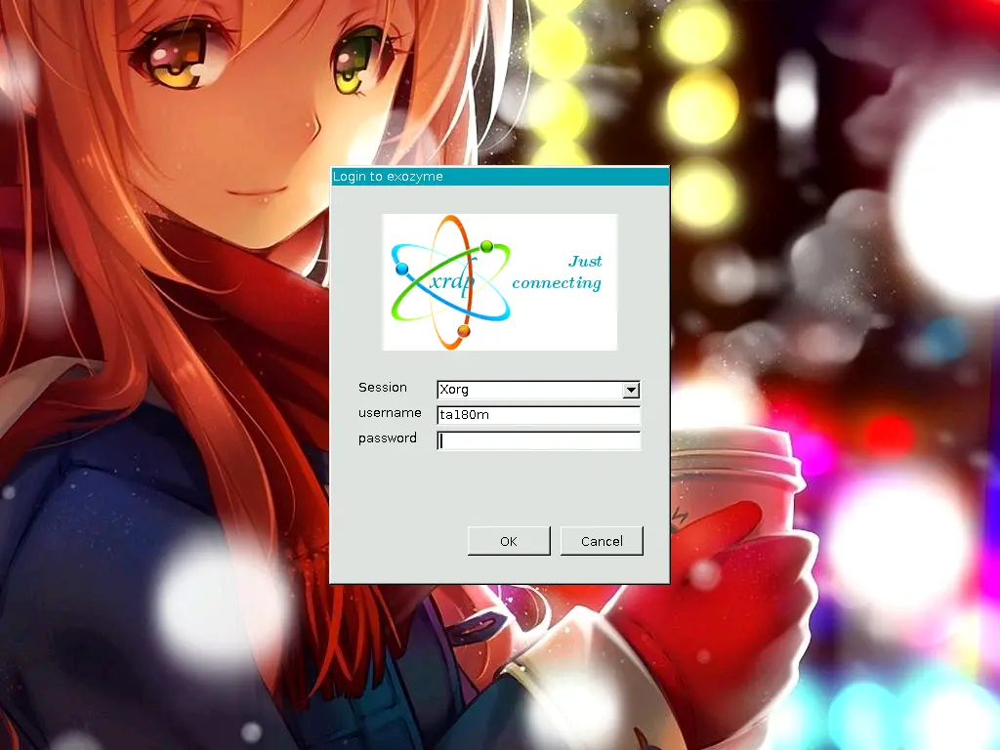
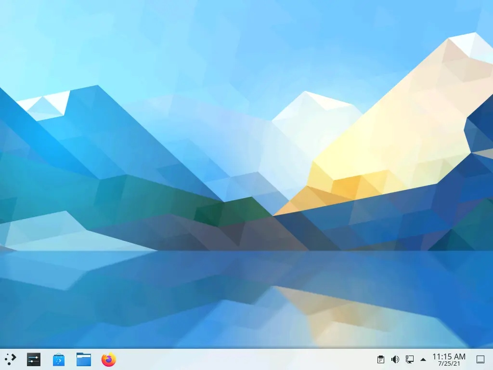
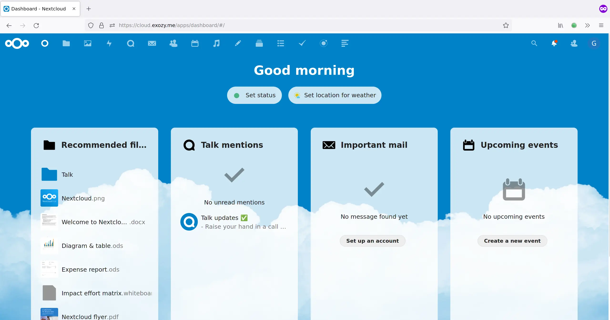
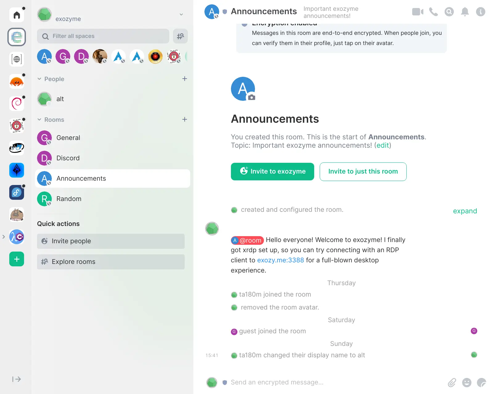

Get started!
Join us!
Interested in exozyme? You can get started by shooting me a message on Matrix, a private, decentralized messaging service, @ta180m:exozy.me. Note that we offer two kinds of services to our users, core services and web services. Please specify if you would like an account for the core services, and account for the web services, or both, as well as what you plan to do with exozyme. Note that these two accounts are different and unrelated. You should also join our Matrix space since it's our main hub for communication.
Logging in
OK, so you've joined exozyme! Now what? You can get started by downloading an RDP remote desktop client if you don't already have one. Linux users should use the FreeRDP client in their distro's repository, while Windows has a built-in client called Remote Desktop Connection. Mac users can use the Microsoft Remote Desktop Beta client. If your OS wasn't listed, check this list.

Alright, so we've gotten that out of the way. Now spin up the client and connect to the address exozy.me:3388. You should see a login screen, where you'll type in your username and password for your core services account. If it all works, it should drop you into a desktop! It might take a few seconds to load properly. Enjoy your remote desktop!

The first thing you should do is open up a terminal and change your password. The easiest way to do this is by searching for "terminal" in the application menu in the bottom left corner. Now change your password with the passwd command. If you want to run apps, note that the GPU currently isn't that good, so games may not work well. Please remember to log out when you are done.
SSH
If you don't need a desktop, you can also log in to a terminal with SSH. For help using the terminal, check out this guide. If you want to run graphical apps, you can use X11 forwarding with ssh -X. Note that this works best with a Linux client; otherwise, follow these instructions.
Hosting your first website
Open up the file explorer in your remote desktop or log in with SSH. Now navigate to the /srv/http/pages folder. Create a new folder with your username which will hold the content for your website. Now let's make an actual page. Create a file called index.html and write some text. If you open up https://exozy.me/~USERNAME, you should see your website in action! Check out exozyme pages for more information about web hosting.
Trying out Nextcloud
Start out by going to our Nextcloud, and log in with your exozyme username and password. If things work out, you'll be taken to your Nextcloud homepage!

So what can you do with Nextcloud? Well, judging by the sheer number of icons on the top bar, a lot! There's cloud storage, an email client, photo manager, music player, calendar, and an integrated Element Matrix client. Have fun!
Enter the Matrix
If you haven't made a Matrix account yet, you should definitely do it since all our communication and announcements happen on Matrix. One easy way to do so is to open up the Element web client. (You can also use the integrated Element client in Nextcloud) Now sign in, and click edit to use our Matrix homeserver instead of matrix.org. You'll want to enter in chat.exozy.me, and then type in your exozyme username and password. Welcome to your shiny new Matrix account!
Let's join some rooms and spaces (groups of rooms) now. Definitely join the exozyme space, and #offtopic is another fun one.

One of Matrix's most ambitious goals is to bridge its network to as many others as possible. It's an awesome goal, and we're hosting a Discord to Matrix bridge as well on exozyme. To use the bridge, start a chat with the bridge bot, and type help to see instructions. Now retrieve your Discord account token using this method or this one. All you need to do now is type link user YOURTOKEN to the bot and enjoy the bridge!
Explore the other web services
We host a number of other web services, including Gitea code hosting, Jellyfin media streaming, and more! You can log into all of the core services with your exozyme account. Go out and explore!
Questions?
Take a look at our frequently unasked questions, and if that doesn't answer it, ask about it on Matrix and someone in the exozyme community will help!